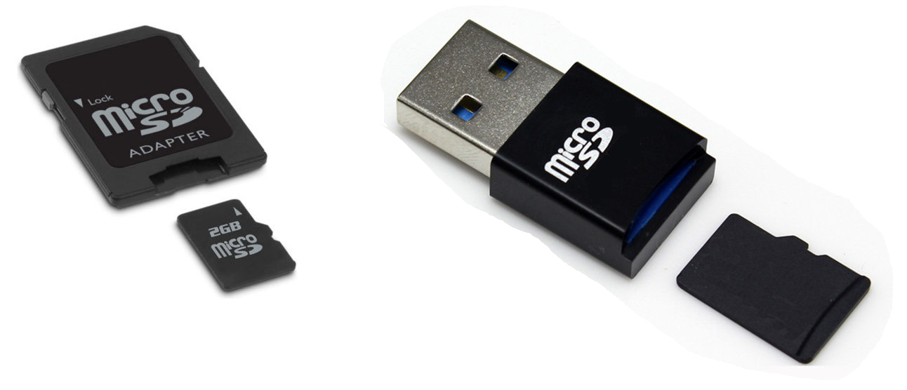
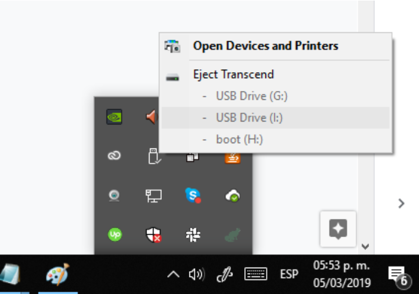

Si vous souhaitez connecter votre Raspberry Pi par Bluetooth ou Wifi, vous devrez éditer le fichier de configuration situé sur la carte micro-SD.
Branchez votre carte micro-SD sur un ordinateur, grâce à un adaptateur vers une carte SD ou un port USB.
Refermez les éventuels messages d'alerte vous disant que la carte a un problème ou qu'elle doit être formatée. Ces messages sont à ignorer.
Depuis votre explorateur, accéder au lecteur qui correspond à la carte que vous venez de brancher. Il s'appellera probablement boot
Ouvrez le fichier quickpi.txt dans un éditeur de texte. La première fois, son contenu ressemblera à ceci :
SSID=wifinetworkname PASSWORD=wifipassword STATICNETWORK=1 STATICIPADDR=192.168.1.31 STATICGATEWAY=192.168.1.1 STATICDNS=8.8.8.8 ENABLEBLUETOOTH=0 NAME=quickpi1 SCHOOL=schoolkey
Vous pouvez alors faire les modifications décrites dans les sections de configuration du wifi ou bluetooth.
Après avoir modifié le fichier de configuration, enregistrez le, et éjectez proprement la carte micro-sd de votre ordinateur (comme avant d'éjecter une clé USB).
Replacez alors la carte SD dans le Raspberry PI alors qu'il est éteint